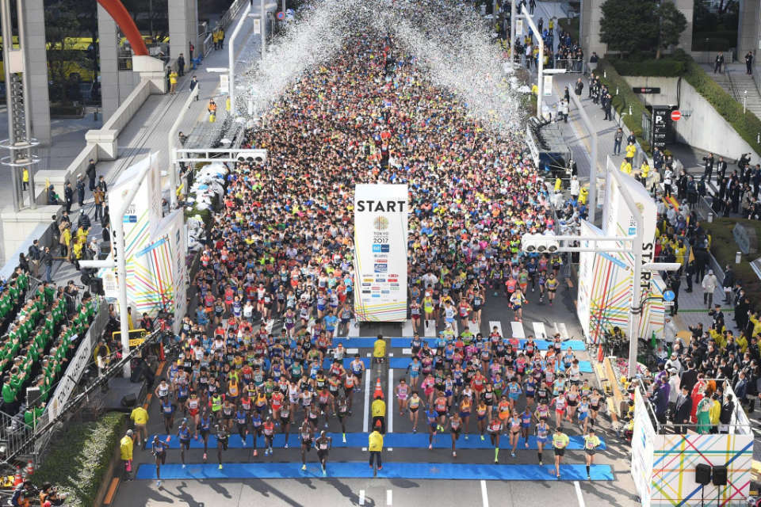

Tokio 2025: La primera World Marathon Major del año
La Maratón de Tokio dió inicio a las World Marathon Majors de este año, tuvo una participación récord, más de
37.000 corredores, quienes llenaron las calles de la capital japonesa en una carrera marcada por la emoción.
El ganador de la maratón fue el keniano John Kiptoo, quien se llevó la victoria con un tiempo de 2:03:44 para los 42km.
Este evento destacó principalmente por su buena organización, y su gran nivel de competencia. Las calles de Tokio
se convirtieron en una fiesta para atletas y espectadores, siendo así una vez mas una de las carreras mas esperadas a nivel mundial.
Estos fueron los ganadores de la Maraton de Tokio
Tadese Takele (Etiopía)-2:03:23
Deresa Geleta(Etiopía)- 2:03:51
Vincent Kipkemoi Ngetich (Kenia)-2:04:00

Maraton de Tokio 2025
¿Qué hace tan especiales a las 7 World Marathon Majors?
Las World Marathon Majors son las joyas del running a nivel internacional. Las carreras que forman
parte de este grupo son las de Tokio, Boston, Londres, Berlín, Chicago, Nueva York y ahora Sidney.
Cada una tiene algo único, desde la historia del Maratón de Boston, hasta los récords que se rompen en Berlín,
correrlos todos es el sueño de muchos
Estos eventos no solo representan un reto físico, sino también una experiencia cultural. Correr en cada ciudad permite
descubrir distintas formas en que el mundo celebra el deporte, convirtiendo cada maratón en una experiencia unica, en donde
corres con gente de todo el mundo y conoces la ciudad de una manera diferente